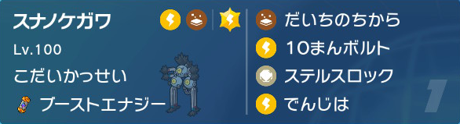
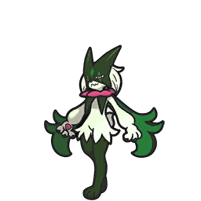
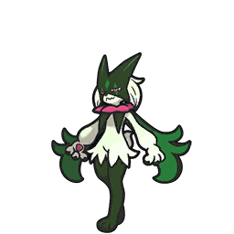

シングルS9 | 犯罪ドラン～きのこを添えて～
どうもこんにちは、のーまです。
今回は要望があったため紹介します。
過去御三家、ヒスイ組、三鳥、コピペなんかが追加されました。
今回は要望があったため紹介します。
パーティ
戦績
TN:のーまだよ。 順位:9715位ルール
S9はレギュDルールで、HOME解禁ルールになります。過去御三家、ヒスイ組、三鳥、コピペなんかが追加されました。
構築経緯
前期同様受け構築を考察。
前期思ったこと
前期思ったこと
- サーフゴーがいらない
- ゴリランダーのグラスフィールドによる処理遅延
- 対受けが面倒
基本選出
全ポケアイコン出すと逆に見にくかったので｢基本選出｣に関しては、自分のポケモンのみ。

初手ステロ電磁波から受け。きつかったら電磁波からドランで犯罪。

ステロがそこまでいらない場合。前期同様パオジアンで相手の選出を見て受ける。

バレルにテラスを強要されそうな場合。積みから破壊されそうな場合。
サイクルが得意な人におすすめ。初手要因2体が少しきつい対ディンルーにも強かった。
初手ステロ電磁波から受け。きつかったら電磁波からドランで犯罪。
パオジアンルート：
ステロがそこまでいらない場合。前期同様パオジアンで相手の選出を見て受ける。
バレルが悲鳴を上げてる場合：
バレルにテラスを強要されそうな場合。積みから破壊されそうな場合。
別の選出：
サイクルが得意な人におすすめ。初手要因2体が少しきつい対ディンルーにも強かった。
個体紹介

スナノケガワ
165(36)-77-119(12)-167(204)-106(4)-168(252)
最速CSベース。少し耐久に振ってるのは初手調子に乗って剣舞するウーラオスのアクジェ耐え用。
 ディンルーに弱い所に目を瞑れば最強のポケモン。
ディンルーに弱い所に目を瞑れば最強のポケモン。
3タテも何回かあったので普通にMVP。
氷テラスを警戒されてドラゴンが鋼テラすることが何回かあった。 10万麻痺を狙うか、テラス読みをするかはあなた次第
モロバレル
221(252)-105-134(252)-105-101(4)-42
純粋なHB。やはりどくどくが強い。
元々は を採用していた。サーフゴーにもそこそこ強い点が評価点だったが、グラスフィールドを相手に吸われて処理速度が落ちるため変更。
瞬間回復がある点や交代して回復できる点などいい点ばかりだった。
適当に入れたじだんだも刺さる機会が多く、どくどくせずに倒すことも多々あった
ヒードラン
193(212)-99-136(76)-158(60)-160(156)-98(4)
HDベース。前回の流用。「虫はネタ」と言われてるが、草よりはツツミに安定するため虫。
ドランに(少し)弱い点が課題だったがドランがどんどん居なくなったのと、
バレルで初見殺し出来たので問題なくなった。
ドランが居なくなってフェアテラのデメリットが少し減ったのでフェアテラも試したい。
ヘイラッシャ
257(252)-121(4)-183(252)-76-85-55
 マスカーニャに弱い点を除けば最強の物理受け。
前回の調整(S)は意味をなさなかった&2倍テラバが痛かったためHBぶっぱに変更。
カゴのみを採用することで技範囲を広げるかつ不安定要素をなくした。
即起きが想像以上に強く、タイプ受けできないポケモンにも強く出ることができた。
スカーフボルチェン
 にねむかごを合わせれば相手のサイクルを崩せる。
にねむかごを合わせれば相手のサイクルを崩せる。
パオジアン
155-172(252)-101(4)-91-85-205(252)
初手最強のポケモン。初手出すだけで｢数的有利｣｢テラス確認｣｢裏確認｣が可能なポケモン。
先制氷技があるため、サイクルに強いボルチェン持ち
をスイープできる点も高評価。
ウォッシュロトム
157(252)-76-129(12)-125-127-150(244)
HSのミラー抜かれ調整。持ち物チェックのためSを1落とした。
上の5体と非常に相性が良い1体。
受けが苦手とするガチグマを通常&トリルどちらでも対応が可能な浮遊ゴテラ。
バンビーさんがケガワの動画で「ディンルー」がきついと言って下さったお陰でしっかり出てくるディンルーに強い。
再生ループが可能。めんどかった ハッサムを止められる。などなど
ハッサムを止められる。などなど
苦手だった拘りトリックもなぜか克服できたので最終日はかなり選出した。
スナノケガワ
165(36)-77-119(12)-167(204)-106(4)-168(252)
最速CSベース。少し耐久に振ってるのは初手調子に乗って剣舞するウーラオスのアクジェ耐え用。
ディンルーに弱い所に目を瞑れば最強のポケモン。3タテも何回かあったので普通にMVP。
氷テラスを警戒されてドラゴンが鋼テラすることが何回かあった。 10万麻痺を狙うか、テラス読みをするかはあなた次第
モロバレル
221(252)-105-134(252)-105-101(4)-42
純粋なHB。やはりどくどくが強い。
元々は を採用していた。サーフゴーにもそこそこ強い点が評価点だったが、グラスフィールドを相手に吸われて処理速度が落ちるため変更。
瞬間回復がある点や交代して回復できる点などいい点ばかりだった。
適当に入れたじだんだも刺さる機会が多く、どくどくせずに倒すことも多々あった
ヒードラン193(212)-99-136(76)-158(60)-160(156)-98(4)
HDベース。前回の流用。「虫はネタ」と言われてるが、草よりはツツミに安定するため虫。
ドランに(少し)弱い点が課題だったがドランがどんどん居なくなったのと、
バレルで初見殺し出来たので問題なくなった。
ドランが居なくなってフェアテラのデメリットが少し減ったのでフェアテラも試したい。
ヘイラッシャ257(252)-121(4)-183(252)-76-85-55
 マスカーニャに弱い点を除けば最強の物理受け。
前回の調整(S)は意味をなさなかった&2倍テラバが痛かったためHBぶっぱに変更。
カゴのみを採用することで技範囲を広げるかつ不安定要素をなくした。
即起きが想像以上に強く、タイプ受けできないポケモンにも強く出ることができた。
スカーフボルチェン
にねむかごを合わせれば相手のサイクルを崩せる。
パオジアン155-172(252)-101(4)-91-85-205(252)
初手最強のポケモン。初手出すだけで｢数的有利｣｢テラス確認｣｢裏確認｣が可能なポケモン。
先制氷技があるため、サイクルに強いボルチェン持ち
をスイープできる点も高評価。ウォッシュロトム
157(252)-76-129(12)-125-127-150(244)
HSのミラー抜かれ調整。持ち物チェックのためSを1落とした。
上の5体と非常に相性が良い1体。
受けが苦手とするガチグマを通常&トリルどちらでも対応が可能な浮遊ゴテラ。
バンビーさんがケガワの動画で「ディンルー」がきついと言って下さったお陰でしっかり出てくるディンルーに強い。
再生ループが可能。めんどかった
ハッサムを止められる。などなど苦手だった拘りトリックもなぜか克服できたので最終日はかなり選出した。
結論
自分が使いたい構築の完成形とも言えるほど、完璧だった。
次の月からは4桁満足しないのでお楽しみに。
次の月からは4桁満足しないのでお楽しみに。